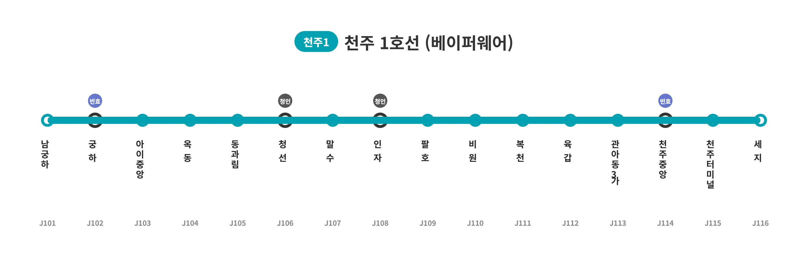

천주 1호선
|
|||
|
 천주 1호선 노선도 (예정)
|
|||
| 노선 정보 | |||
|---|---|---|---|
| 노선 색상 | ■ 청록색 (예정)[*]정확한 색상 코드는 #00AABB. 우연의 일치인지 담당자의 취향인지 뱅드림!의 히카와 사요 공식 퍼스널 컬러와 완벽하게 일치한다(...). | ||
| 운영 기관 | 천주도시공사 (예정) | ||
| 개통일 | 2035년 (예정)[*]수년째 타당성 조사에서 맴돌며 흑역사 취급을 받았으나, 천주시 인구 폭발 및 도로 한계 돌파로 마침내 예타를 전격 통과했다. | ||
| 기점 | 남궁하역 (예정) | ||
| 종점 | 세지역 (예정) | ||
| 역 수 | 16개 | ||
| 거리 | 미정 | ||
| 시스템 | 경전철 (지상-지하 구간 병용) | ||

1. 개요
"천주시의 꽉 막힌 혈관을 뚫어줄 야심찬 프로젝트"
"하지만 언제 삽을 뜰지 며느리도 모르는 전설의 유령 노선"
"드디어 베이퍼웨어를 탈출하고 2035년 개통을 향해 폭주하는 희망의 노선"
"서해시: 언니, 아직도 예타 통과 못했어? 완전 안 룽해~"
천주시의 오래된 심장인 구도심 천성구와 떠오르는 신도심인 궁하구를 거대한 십자형으로 관통하기 위해 천주도시공사가 야심 차게 멱살 잡고 캐리 중인 경전철 노선이다.
기존에 빈효광역철도나 일반철도의 혜택을 1도 받지 못해 버스에만 목숨을 걸어야 했던 궁하동 남부, 아이동 중앙부, 청선읍, 인자읍, 팔호동, 육갑동 등 굵직한 헬게이트 인구 밀집 지역들을 한 번에 쓸어 담는 알짜배기 노선으로 기대를 모았다. 수년째 타당성 조사의 문턱을 넘지 못하고 망했어요 베이퍼웨어 취급을 받으며 시민들에게 깊은 절망과 교통체증의 분노를 안겨줬으나, 최근 천주시의 급격한 인구 폭발과 시내 도로망의 붕괴 수준 한계 상황이 맞물리면서 마침내 기적적으로 예비타당성 조사를 전격 통과, 2035년 개통을 목표로 화려한 부활의 신호탄을 쏘아 올렸다.
2. 추진 배경 및 특징
2.1. 십자형 관통과 구도심 지하화, 그리고 청선인자선 꼼수(?)
천주시는 인구 50만을 넘보는 거대 지자체임에도 불구하고 내부를 연결하는 철도망이 전무하여, 시내버스(특히 기사도 승객도 미쳐버리는 살인적인 장거리 노선)에 의존하는 비율이 비정상적으로 높았다. 이를 타개하기 위해 당초 예산을 아끼려 전 구간 지상 고가철도로 추진했으나, 구도심 지역 주민들의 빗발치는 소음 민원과 도시 미관 훼손 반발을 수용하여 관아동3가역, 천주중앙역, 천주터미널역 등 핵심 구도심 구간은 지하로 뚫어버리는 파격적인 방향으로 계획을 대폭 변경했다.
하지만 구도심 지하화로 인해 건설비가 우주로 치솟으며 B/C(비용대비편익) 값이 폭락하자, 천주시는 기가 막힌 원가 절감 꼼수를 생각해 낸다. 바로 "청선역~인자역 구간만큼은 굳이 비싼 고가를 올리지 말고, 코레일 소유의 애물단지 화물선인 '청선인자선' 선로를 삥뜯어... 아니 재활용하여 지상 1층 평면으로 굴리자"는 천재적인 아이디어였다.
이 구간은 청선읍(인구 3만)과 인자읍(인구 2만) 등 엄청난 인구가 몰려있음에도 여객역이 단 하나도 없어 주민들이 평생 화물열차 쇳소리와 먼지만 먹고 살아야 했던 교통의 초오지였다. 천주시의 이 과감한 꼼수는 건설비를 대폭 깎아 B/C 값을 극적으로 끌어올리는 신의 한 수로 평가받았고, 결국 난공불락 같던 예타 통과의 일등 공신이 되었다.
2.2. 천주시(사요) vs 서해시(히나): 피 말리는 자매 덮밥(?) 콤플렉스와 예타 통과
과거 천주시 지역 커뮤니티의 최대 발작 버튼이자, 천주 1호선이 무능한 베이퍼웨어로 조롱받던 시절 가장 많이 뚜드려 맞으며 비교되던 대상이 바로 인근의 서해경전철이다.
인구 52만의 거대 지자체이자 역사와 전통의 맏언니 격인 천주시는 오랫동안 타당성 조사 단계에서 무한 루프를 돌며 탁상행정의 극치를 보여주었다. 반면, 인구 43만의 서해시는 특유의 쾌도난마 같은 미친 행정력으로 "완전 룽♪하게" 서해경전철 사업을 뚝딱 확정 짓고 2034년(조기 개통 2032년 목표) 개통을 향해 거침없이 질주하고 있다. 심지어 인구 30만따리 위성도시인 약산시조차 2024년에 효빈 1호선 연장선을 개통하며 축배를 드는 마당에, 천주시민들의 분노와 상대적 박탈감은 폭동 직전까지 달했었다.
이러한 두 도시의 눈물겨운 애증 관계는 지역 서브컬처 팬덤 사이에서 히카와 사요와 히카와 히나 자매의 콤플렉스 떡밥에 찰떡같이 빗대어지며 밈으로 대폭발했다. 덩치가 크고 정석적이지만(지하화 떡밥 등) 매번 예타에서 고배를 마시며 자존심을 구기던 천주 1호선이 고지식한 맏언니 사요, 체급은 살짝 작아도 천재적인 속도로 척척 예타를 프리패스하고 진도를 빼는 서해경전철이 재능충 동생 히나라는 것. 서해시: "언니, 아직도 경전철 예타 통과 못했어? 완전 안 룽해~" 천주시: "읏... 서해시 당신은 정말...!"
다행히 천주 1호선도 극적인 꼼수(청선인자선 공용)와 뼈를 깎는 설계 변경, 그리고 시민들의 투쟁을 동원한 끝에 지옥 같던 예타를 뚫어내고 2035년 개통이 확정되었다. 비록 서해시보다 개통은 늦지만, 피나는 똥꼬쇼 끝에 결실을 맺으며 베이퍼웨어의 오명을 씻어냈다는 점 역시, 손가락에 피가 나도록 기타 연습에 매진하여 결국 자신만의 소리를 찾은 사요의 감동적인 서사와 소름 돋게 일치한다는 찬사를 받으며 "사요코스터 노선"이라는 애칭(?)마저 얻게 되었다.
게다가 최근 천주 1호선의 공식 노선 색상 코드가 청록색(#00AABB)으로 확정되면서 이 밈은 그야말로 공식(?)의 경지에 올라버렸다. 하필 저 색상 코드가 히카와 사요의 뱅드림 공식 퍼스널 컬러(#00aabb)와 토시 하나 안 틀리고 100% 완벽하게 일치하기 때문(...). 이를 본 철도 동호인들과 씹덕 팬덤은 "천주도시공사 디자인팀에 진성 로젤리아 오시가 숨어있는 게 학계의 정설이다", "이쯤 되면 천주 1호선 진입음은 무조건 FIRE BIRD로 깔고 안내방송 성우는 쿠도 하루카를 섭외해야 한다"며 경악과 환호를 동시에 보내고 있다. 공교롭게도 라이벌 노선인 서해경전철은 이미 한참 전부터 히카와 히나의 퍼스널 컬러에 가까운 민트색(#0099CC)을 채택하고 있었기에, 노선 색상마저 완벽하게 '사요(천주) vs 히나(서해)' 자매 덮밥 구도를 기적처럼 완성해 버린 셈이다. 이정도면 지자체 차원에서 대놓고 뱅드림 콜라보를 노린 빅 픽처가 아닐까
3. 사건사고 및 여담
3.1. 12만 시민 코레일 참교육 사건 (폭동 직전)
천주시가 B/C값을 영끌하기 위해 '청선인자선 선로 공용' 카드를 꺼냈을 때, 갑의 위치에 있던 코레일 측은 "안 그래도 화물 굴리기 바빠 죽겠는데 어디서 지자체 셔틀(경전철)을 들이미냐"며 콧방귀를 뀌고 단칼에 거절했다.
그러자 수십 년간 새벽마다 화물 소음에 고통받으면서도 여객역 하나 없이 소외당했던 청선읍, 인자읍 주민들(도합 5만 명)의 인내심이 폭발했다. 주민들은 "우리가 기차 못 타게 할 거면 선로에 드러눕고 코레일 본사에 트랙터 몰고 쳐들어가서 선로를 다 뽑아버리겠다"며 문자 그대로 궐기했다. 여기에 1호선 개통만을 목빠지게 기다리던 팔호동, 비원동, 육갑동 주민들까지 꽹과리를 치며 합세하여, 무려 12만 명(천주시 전체 인구의 5분의 1)에 달하는 분노한 시민 십자군이 결성되었다.
이 매드맥스급 12만 연합군이 진짜로 코레일 본사를 물리적으로 박살 낼 기세로 여론전을 펼치며 다가오자, 사태의 심각성을 깨닫고 기겁한 코레일은 하루아침에 태도를 180도 돌변하여 "선로 개량 비용만 천주시가 부담해 주신다면 기꺼이 허락해 드리겠습니다^^"라며 다급하게 꼬리를 내렸다. 물리치료의 승리
3.2. 윤대환 커넥션 '족주고속'의 멸망
위의 12만 대군 궐기 당시, 천주시내 버스를 독점하다시피 하던 악명 높은 버스 회사 족주고속은 자신들의 밥그릇(장거리 노선 수익)이 뺏길 것을 우려해 전철 도입을 결사반대했다. 심지어 궐기하는 읍민들을 지역 이기주의 폭도로 매도하는 악성 렉카들의 뒷배를 몰래 봐주는 추악한 짓을 저질렀다.
반면 다른 두 버스 회사(천주여객, 소천여객)는 지옥 같은 장거리 노선을 굴리느라 기사들이 퇴사하는 상황이었기에 내심 전철 개통으로 노선이 칼질되길 바랐고, 오히려 시위하러 가는 주민들을 위해 예비차를 무료 셔틀로 투입해 주는 화력 지원을 퍼부으며 민심을 얻었다. (나머지 두 곳인 창진여객, 월산여객은 눈치만 보며 관망했다.)
이후 분노한 네티즌 수사대에 의해 족주고속의 실소유주가 과거 약산시 단수 테러 등 온갖 비리의 주범인 윤대환의 핵심 측근임이 밝혀지자, 천주시민들은 초대형 불매 운동과 시청 앞 철야 농성을 전개했다. 결국 족주고속은 온갖 불법 행위가 적발되어 시내버스 면허가 강제 취소되었고 2025년 완벽하게 파산 및 공중분해되었다. 족주고속이 쥐고 있던 알짜 노선은 시위에 화력 지원을 아끼지 않았던 천주여객과 소천여객이 달달하게 흡수하며 기업 규모가 떡상했다. (눈치만 보며 관망하던 창진과 월산은 땅을 치고 후회 중이다.) 천주 1호선은 땅에 삽도 뜨기 전에 지역 적폐 청산 킬마크를 하나 거하게 챙긴 셈이 되었다.
3.3. 차량기지 핑퐁 게임과 세지동의 눈물
전철이 생기면 항상 따라오는 골칫거리인 '차량기지 건설' 문제에서도 한바탕 소동이 있었다. 초기에는 천성구 외곽인 육갑동 인근에 기지를 지으려 했으나, 육갑동 주민들의 거센 반발(NIMBY)에 부딪혀 부지가 표류했다. 결국 천주시는 남쪽 끄트머리인 세지동의 빈 땅을 최종 후보지로 낙점했다. 세지동 주민들은 혐오 시설인 기지가 들어오는 대신 세지역(J116)과 종점 차량기지역인 세지기지역(J117, 가칭) 신설을 약속받으며 눈물을 머금고 타협안을 수용했다. 집값은 포기해도 역세권은 포기 못 한다.
4. 역 목록
 빈효선
빈효선

| 역번호 | 역명 | 한자 | 승강장 형태 | 환승 노선 | 소재지 |
|---|---|---|---|---|---|
| J101 | 남궁하 | 南宮下 | ■││■ (지상2층) | - | 천주시 궁하구 궁하동 |
| J102 | 궁하 | 宮下 | ■││■ (지상2층) |
|
천주시 궁하구 궁하동 |
| J103 | 아이중앙 | 啞異中央 | ■││■ (지상2층) | - | 천주시 궁하구 아이동 |
| J104 | 옥동 | 玉洞 | ■││■ (지상2층) | - | 천주시 궁하구 옥동 |
| J105 | 동과림 | 東果林 | ■││■ (지상2층) | - | 천주시 궁하구 과림읍 |
| J106 | 청선 | 靑鮮 | ■││■ (지상1/2층 미정) |
(청선인자선 공용) | 천주시 궁하구 청선읍 |
| J107 | 말수 | 末水 | ■││■ (지상1/2층 미정) |
- | 천주시 궁하구 청선읍 |
| J108 | 인자 | 燐子 | ■││■ (지상1/2층 미정) |
(청선인자선 공용) | 천주시 천성구 인자읍 |
| J109 | 팔호 | 八湖 | ■││■ (지상2층) |
(예정) |
천주시 천성구 팔호동 |
| J110 | 비원 | 飛院 | ■││■ (지상2층) | - | 천주시 천성구 비원동 |
| J111 | 복천 | 福泉 | ■││■ (지상2층) | - | 천주시 천성구 복천동 |
| J112 | 육갑 | 六甲 | ■││■ (지상2층) | - | 천주시 천성구 육갑동 |
| J113 | 관아동3가 | 官衙洞3街 | ■││■ (지하) | - | 천주시 천성구 관아동3가 |
| J114 | 천주중앙 | 泉州中央 | ■││■ (지하) |
|
천주시 천성구 중앙동2가 |
| J115 | 천주터미널 | 泉州터미널 | ■││■ (지하) | - | 천주시 천성구 산민동 |
| J116 | 세지 | 世知 | ■││■ (지상2층) | - | 천주시 천성구 세지동 |
5. 관련 문서
- 천주시
- 천주도시공사
- 청선인자선
건설비 폭탄을 막아준 천주 1호선의 진정한 구세주 베이퍼웨어(과거의 아픈 흑역사)- 서해시 / 서해경전철: 천주 1호선과 천주시민들의 영원한 열폭 대상이자, 부러워 오열하게 만든 재능충 동생 포지션의 얄미운 노선.
- 히카와 사요: 안습했던 천주 1호선의 든든한(?) 정신적 지주. 수없는 좌절 끝에 결국 꼼수(청선인자선)와 피나는 똥꼬쇼로 예타를 뚫어낸 1호선의 서사 그 자체를 대변한다.
심지어 퍼스널 컬러(#00AABB)마저 천주 1호선에 강제 주입당했다. - 히카와 히나: 완전 룽♪한 서해경전철의 진정한 모티브. 사요(천주 1호선)의 멘탈을 가루로 털어버리던 재능충의 화신.
이쪽도 퍼스널 컬러가 서해경전철과 소름돋게 비슷하다. - 윤대환 / 족주고속: 1호선 개통을 막으려다 시민들의 분노를 사고 완벽하게 파산해버린 지역 적폐의 상징.
- 약산시
효빈 1호선 연장 뚫렸다고 자랑해서 천주시민들 발작하게 만든 열폭 대상 2